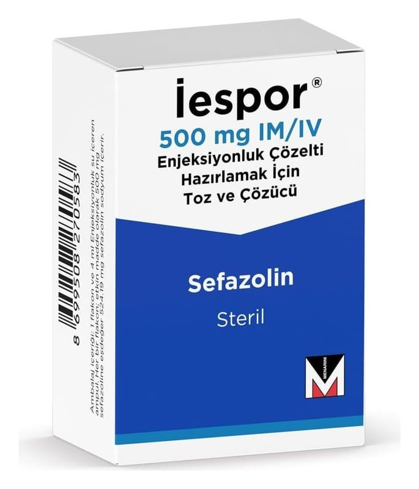

Iespor 500 mg IM/IV Enjeksiyonluk Çözelti Hazırlamak İçin Toz Ve Çözücü

Ne için kullanılır
KT · Bölüm 1İESPOR bir antibiyotiktir. Her flakon 500 mg sefazolin (sodyum olarak) içerir. 500 mg sefazolin (sodyum olarak) içeren 1 flakon ve 4 ml enjeksiyonluk su içeren 1 çözücü ampul bulunan ambalajlarda sunulmaktadır.
İESPOR, duyarlı mikroorganizmaların yol açtığı aşağıdaki enfeksiyonların (iltihap oluşturan mikrobik hastalık) tedavisinde kullanılır:
● Solunum yolu enfeksiyonları ● İdrar yolu enfeksiyonları ● Deri ve yumuşak doku enfeksiyonları ● Safra yolu enfeksiyonları ● Kemik ve eklem enfeksiyonları ● Genital (cinsel organlar) enfeksiyonlar ● Septisemi (kanda bakteri bulunması)
● Endokardit (kalp zarının iltihabı) ● Perioperatif profilaksi (ameliyat öncesi koruma önlemleri için)